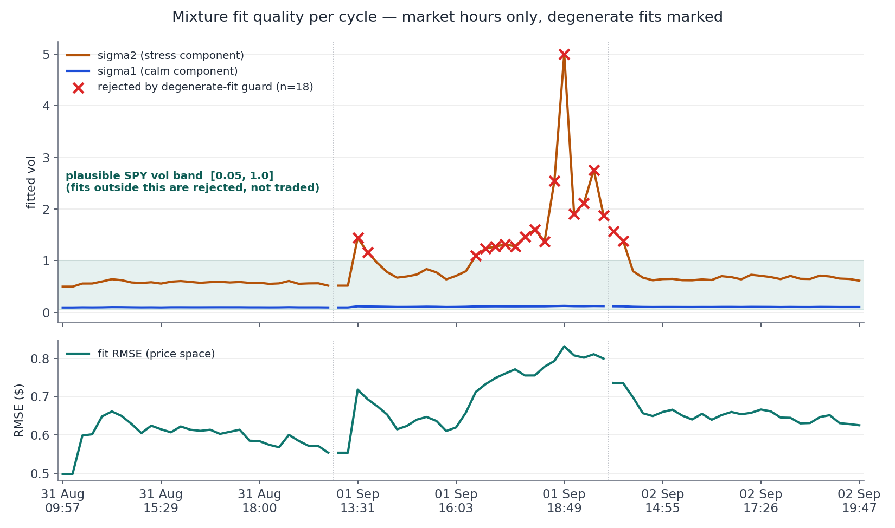
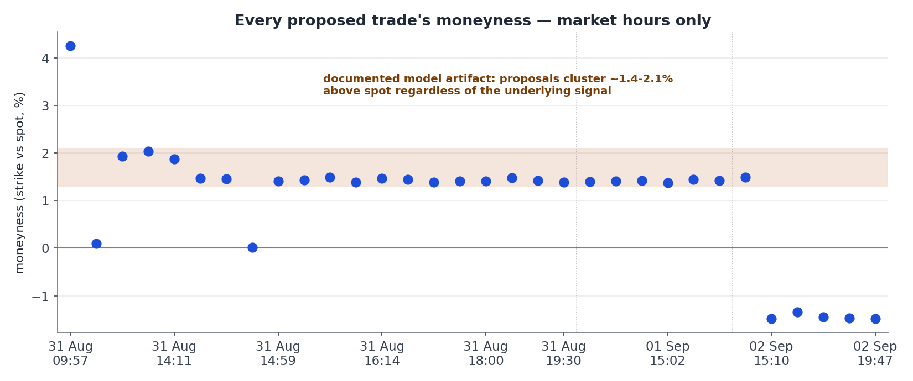
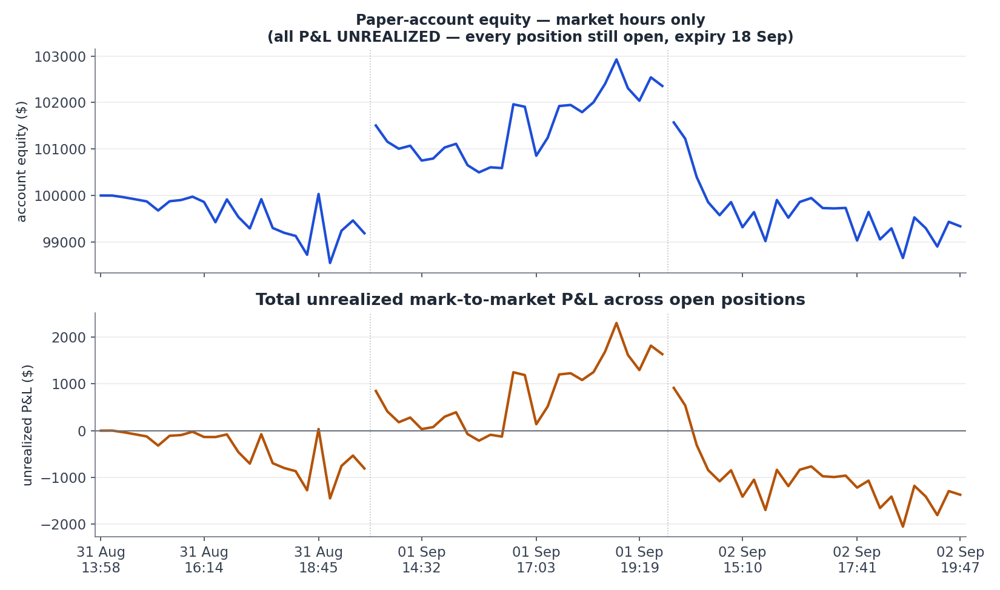
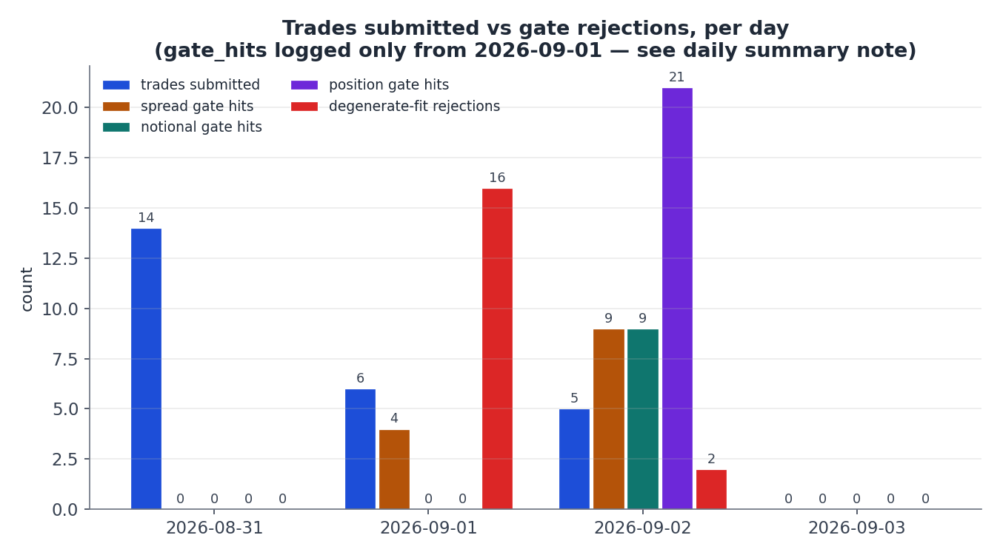
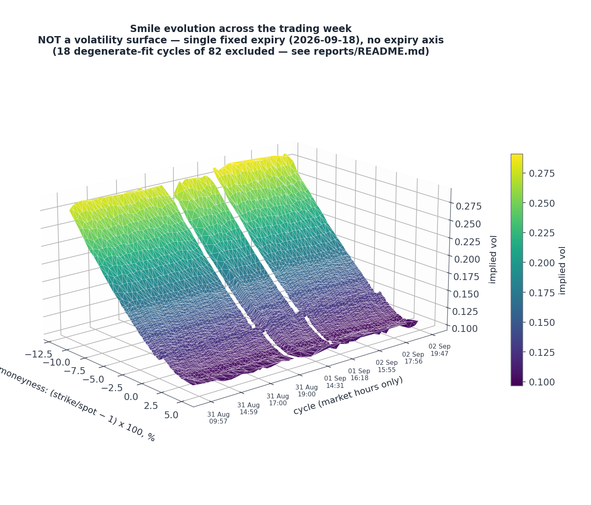

Every figure below is unrealized mark-to-market. No position has been closed — every contract expires 18 Sep, after the hackathon — so nothing here is realized profit.
Thursday 3 Sep is the official EOD scoring day; as of this report the scheduler had not yet been restarted for it, so all figures above reflect Mon–Wed only.
Gate-hit counting (spread / notional / position) began the morning of 1 Sep — Monday's rejections were printed to console, not logged, so those columns read zero by construction, not because nothing fired.
20 of 31 cycles proposed a trade; 14 orders submitted, with nothing checking existing exposure or repetition. The same K=777 straddle was re-proposed and filled nine times — roughly $21,000 of premium concentrated in one repeated position, discovered only in the next morning's log review.
Deterministic risk gates shipped before market open: a per-trade notional cap and a per-leg position cap (max 2 contracts per exact symbol). Peak concentration on any single leg fell from 9 to 3. Sixteen of 28 cycles were separately rejected by a degenerate-fit guard — the mixture model's second component drifted to lam > 0.98, effectively vanishing, letting sigma2 escalate as high as 2.55 (later 5.0, the optimizer's own bound) with no real trading signal behind it.
“Fit RMSE of 0.653 is within normal bounds, fit_success is true, zero gate rejections occurred this cycle, and unrealized P&L is positive at $278.89 on $101,006.32 total account equity with no event flags.”
— regime gate, 14:16:41 UTC, verdict full
Position-gate rejections rose sharply against a low fill count — investigated directly rather than assumed benign. Replaying the exact gate logic against saved snapshots confirmed every rejection matched a genuinely saturated strike (774–777, the same three-day-old artifact band), not a new bug:
K=774 straddle skipped: already holding qty 3 >= limit 2 on SPY260918C00774000
Separately, one proposal cleared every internal gate — including a full regime verdict — and was still rejected, by Alpaca itself:
"potential wash trade detected. use complex orders" — 403, Alpaca API
Root cause: the engine proposed selling a call already held long as another trade's hedge leg from 45 minutes earlier — a same-day opposing-direction conflict no existing gate checked for. Fixed and tested same day: a direction-conflict guard, plus an aggregate long-vol notional cap ($15,000 across all held straddles) bounding the "a fresh strike enters the tradable band every day" accumulation risk visible across all three days. Both were replayed against the actual failing cycle and confirmed to catch it — the notional gate's count for the day (9) reflects this new aggregate check firing repeatedly once it went live, on top of the original per-trade check.
Charts are generated by report.py directly from the JSONL logs — no numbers are hand-transcribed.





| Date | Cycles | Proposed | Submitted | Spread | Notional | Position | Degen. | Full | Half | Stand down | Start eq. | End eq. |
|---|---|---|---|---|---|---|---|---|---|---|---|---|
| 31 Aug | 31 | 20 | 14 | 0 | 0 | 0 | 0 | 0 | 0 | 0 | 99,998.60 | 99,187.20 |
| 1 Sep | 28 | 6 | 6 | 4 | 0 | 0 | 16 | 6 | 0 | 0 | 101,505.32 | 102,356.02 |
| 2 Sep | 26 | 6 | 5 | 9 | 9 | 21 | 2 | 1 | 5 | 0 | 101,571.26 | 99,337.15 |
| 3 Sep | 0 | — | — | — | — | — | — | — | — | — | — | — |
| Week | 85 | 32 | 25 | 13 | 9 | 21 | 18 | 7 | 5 | 0 | 99,998.60 | 99,337.15 |
Gate-hit and regime-gate columns are zero for 31 Aug by construction — that instrumentation didn't exist yet, not because nothing was rejected. 3 Sep shows no cycles as of this report; it is today's official EOD scoring day and had not yet started. "Max/min unrealized" omitted here for space; see the equity chart above for the full trajectory.
| Gate | Fired | What it caught |
|---|---|---|
| Spread (execution) | 13× | Candidates whose actual bid/ask legs were too wide to keep the modeled edge after crossing the market. |
| Notional (per-trade + aggregate) | 9× | Individually-fine trades still blocked once the running aggregate exposure across held straddles reached its cap — this count jumped once the aggregate check shipped mid-week Wednesday. |
| Position (per-leg cap) | 21× | Re-proposals of a strike already held at the 2-contract cap — the direct, working fix for Monday's incident. |
| Degenerate-fit | 18× | Fits where the mixture's second component collapsed to near-zero weight (lam>0.98), letting sigma2 escape to implausible values. Real example: sigma2=1.4425 outside plausible SPY vol band [0.05, 1.0]. |
| Regime (LLM) | 5× | Restrictive verdicts out of 12 issued — sized down under real drawdown conditions rather than blocking outright. |
The unshifted 2-component mixture assumes both components share one forward, producing a near-symmetric smile — it cannot reproduce SPY's monotonic downside skew, so it systematically underprices the upside wing at a roughly constant moneyness offset (~1.4–2%). Confirmed against Brigo's own MDD lecture notes, which describe a shifted extension as the correct fix. Contained, not fixed, via a tradable-moneyness band and per-leg/aggregate exposure caps.
When the smile sits somewhere the two-component fit handles badly, the optimizer can satisfy the residual by collapsing lam toward 1 and letting the now near-weightless second component's sigma2 drift arbitrarily — a calibration artifact, not a real vol regime. The degenerate-fit guard (plausibility band [0.05, 1.0]) catches every instance before it reaches a trade.